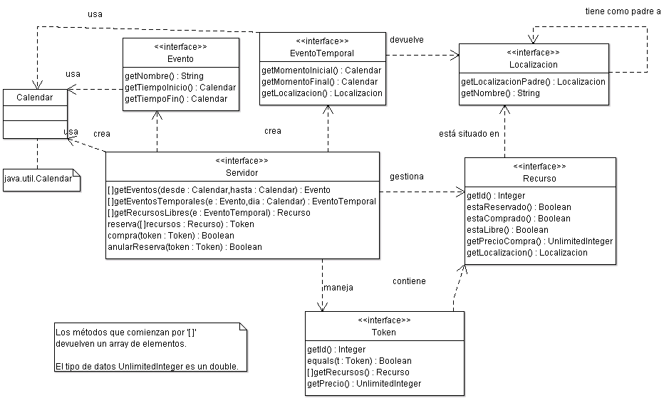

Programación Orientada a Objetos. Curso
2009/2010
| Calendario |
Lunes |
Martes |
Miércoles |
Jueves |
Viernes |
Observaciones |
| Inicio |
08/3 |
09/3 |
10/3 |
11/3 |
05/3 |
|
| Evaluación |
19/4 |
20/4 |
21/4 |
22/4 |
16/4 |
Entrega el día anterior.
El grupo del lunes 2 horas antes del comienzo de la clase. |
En esta práctica el alumno se formará en los siguientes conceptos y habilidades:
Se implementará un proyecto completo en Java, a partir de un diseño orientado a objetos dado en UML. En una segunda fase, la aplicación se completará con una capa de arquitectura distribuida. Para ello, el alumno tendrá a su disposición:
Se valorará un diseño que aplique adecuadamente los principios de orientación a objetos (jerarquías de clase, modularidad, etc.) y haga un uso adecuado de las clases de la librería estándar Java.
Se implementará completamente el sistema de reserva de entradas de cine diseñado en la práctica anterior (con las rectificaciones oportunas). Se definirán las clases e interfaces Java necesarias, las estructuras de datos y métodos de las clases, desarrollando un programa completo.
El trabajo a realizar incluye las siguientes partes:
En esta primera fase, se implementará la gestión completa de datos y estructuras, y todos los detalles necesarios de cada clase, necesarios para las funcionalidades básicas del sistema: creación de salas, asignación de sesiones, horarios, reserva de localidades, etc. Partiendo del diagrama y las interfaces suministrados en esta práctica, el programa se desarrollará como una especialización de un sistema abstracto de reserva de recursos. En este caso el recurso puede ser el derecho a una butaca para ver un evento un día y durante un tiempo concreto, si la sesión es numerada; o el sistema podría proporcionar una cantidad de entradas para un evento, un día y durante un tiempo determinado, en el caso de acceso a una sesión no numerada.
La implementación se podrá hacer como una aplicación local (un solo proceso). Las clases se conectarán con las interfaces proporcionadas, pero se podrán ignorar las referencias a elementos RMI que puedan aparecer en éstas, así como la terminología de cliente-servidor.
El eje de la aplicación será un objeto servidor (o cine) que se encargará de ofrecer los recursos disponibles, información sobre los eventos, butacas libres en cada zona, etc. Además permitirá completar el pago de dichas entradas.
Otro tipo de objeto fundamental será el cliente, que ofrecerá al usuario la información del servidor, y permitirá comprar las entradas en dos fases: una de reserva y otra de pago (junto con la compra y reserva definitiva de las entradas una vez realizado el pago correctamente). El usuario cliente se comunicará interactivamente con el programa, por lo que el alumno debe implementar una interfaz que permita realizar estas funcionalidades por línea de comandos.
Otro de los usuarios del sistema es el gestor del cine. Para este usuario se ha de ofrecer una funcionalidad básica adaptada a sus necesidades, para que pueda crear fácilmente cada sala, con sus filas y butacas concretas, dando la menor información posible. Por ejemplo se puede asumir que cada zona de la sala es cuadrada, con un número de filas y las mismas butacas en cada una. Además ha de poder crear las sesiones, por ejemplo especificando un rango de fechas, un intervalo (diario/semanal), la hora de la sesión y el título o código correspondiente al evento.
Para simplificar la aplicación no será necesario que el gestor diseñe los recursos de forma interactiva, sino que estos se podrán fijar directamente mediante código java que ejecutará el servidor al iniciarse, sin interfaz de usuario, aunque se han de diseñar las clases necesarias, para que el método que especifica las salas/eventos requiera el menor código posible.
Se aconseja seguir la convención de paquetes que se incluye en las clases entregadas, es decir: es.uam.eps.poo.
En una segunda fase, se dotará al programa de una arquitectura cliente-servidor basada en objetos distribuidos RMI. Los objetos cliente y servidor, implementados en el paso anterior, podrán encontrarse en máquinas distintas. La comunicación entre el cliente y el sistema se adaptará añadiendo capacidad de ejecución remota, o en su caso serialización, a las clases que se considere necesario. Se ha de tener en cuenta que los objetos remotos deberán crearse (llamada directa al constructor) en el lado que les es natural (generalmente servidor, o excepcionalmente cliente), de forma que el otro programa sólo use las referencias a ellos (stubs), o si se considera adecuado en algún caso, copias serializadas. El sistema permitirá a varios clientes acceder a un único servidor.
Consideraciones:
A continuación se muestra el diagrama de clases de la parte abstracta, correspondiente a las interfaces entregadas por los profesores.

Las prácticas entregadas han de cumplir las interfaces entregadas por los profesores. En particular, debería ser posible, dadas las prácticas de las parejas X e Y, intercambiar la parte del cliente de X y que funcione con el servidor de Y, y viceversa.
Por otro lado, no se prevé entregar ningún conjunto de test durante el desarrollo de esta práctica, pero se recomienda a los alumnos que implementen, ejecuten, entreguen y documenten tantos casos de prueba como crean necesarios.
Las prácticas se deben entregar antes de la fecha de
evaluación indicada al comienzo del enunciado, teniendo en
cuenta las horas límite
de entrega mencionadas en las normas
de la asignatura.
El fichero .zip a entregar debe incluir:
NOTA: Las entregas que no cumplan los requisitos enumerados en las normas recibirán una penalización de 0.5 puntos.
(C) 2009-2010 Escuela Politécnica Superior, UAM